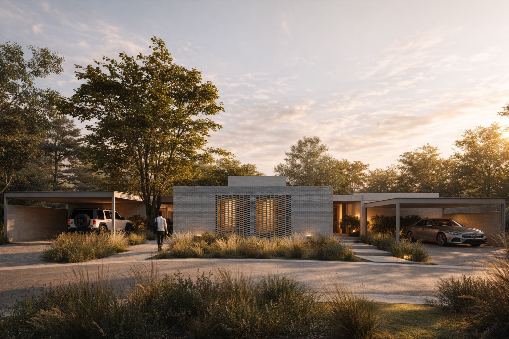

01 / La llegada
Se entra y ya se ve el fondo
Una puerta pivotante de madera, tan alta como el paño de vidrio que tiene al lado. Desde la vereda se ve la casa de lado a lado y el verde del fondo.

Emocionalmente,
un barrio.
Seis casas sobre una manzana entera de Villa Allende Golf, con cuatro calles alrededor y los árboles grandes que ya estaban.
Villa Allende creció con dos trazados que no terminan de coincidir. Donde se cruzan quedó esta manzana en cuña, rodeada por Ecuador, Guido, Paraguay y Montevideo. Esa forma irregular es la que da origen al símbolo de Neibor, y es también la que ordena el proyecto.
Las seis casas se apoyan sobre el perímetro y dejan el centro para una calle interna que entra por Paraguay. Los árboles adultos del borde quedaron donde estaban.

Imagen: axonométrica de implantación provista por el desarrollo. Las manzanas vecinas se muestran esquemáticas.
Las ciudades crecen, los desarrollos se agrandan y los vecinos quedan cada vez más lejos. Neibor va en la dirección contraria. Seis casas por manzana es una decisión de escala: la cantidad justa para que una comunidad se conozca entera, comparta una calle interna y siga teniendo cada una su propio fondo.
Un housing tiene propietarios.
Un barrio tiene vecinos.


Un solo material resuelve el frente completo, en aparejo corrido y sin revoque encima.
Sobre el ingreso, el mismo ladrillo se abre en celosía. De noche deja pasar la luz hacia la calle; la mirada, no.
Las cubiertas son planas y vuelan sobre el ingreso, la cochera y la galería. La misma pieza es estructura, alero y cielorraso.
Los paños llegan al piso y al techo. En el estar hay vidrio en dos orientaciones: al jardín por un lado, al patio por el otro.
El mismo piso arranca en el ingreso, cruza la casa y sigue afuera bajo la galería, sin cambio de nivel.
Materiales descriptos a partir de las imágenes de proyecto. Pendiente: memoria descriptiva y pliego de terminaciones
Una puerta pivotante de madera, tan alta como el paño de vidrio que tiene al lado. Desde la vereda se ve la casa de lado a lado y el verde del fondo.

Entre el ingreso y el estar hay un patio propio, con canto rodado y plantas de sombra. Ilumina el pasillo sin necesidad de abrir una ventana a la calle.

La isla mira al comedor y el comedor mira al jardín. El ambiente recibe luz de dos lados durante todo el día.

El ventanal del principal abre contra la pileta y el jardín. Ninguna habitación mira a la calle.


Imágenes de proyecto. Mobiliario y equipamiento de carácter ilustrativo. Pendiente: planos de planta y superficies por casa

La galería está al mismo nivel y con el mismo piso que el comedor, así que en verano la casa se estira hasta la pileta. Cada casa tiene la suya, con su jardín contra la línea de árboles del borde.


Hasta acá, el proyecto.
Desde acá, lo concreto.
Tocá una casa sobre el plano para ver dónde está parada dentro de la manzana y a qué calle da su frente.


Esquema orientativo sobre la implantación de proyecto. Pendiente: numeración comercial, superficies, dormitorios, valores y estado de disponibilidad por unidad

La manzana está dentro del trazado consolidado de Villa Allende Golf. Alrededor hay casas bajas, lotes grandes y arbolado adulto. El campo de golf aparece a pocas cuadras sobre el mismo trazado y las Sierras Chicas cierran el horizonte hacia el oeste.


Referencias tomadas de la planimetría de proyecto. Pendiente: distancias y tiempos verificados a puntos de interés
Neibor lo desarrolla GRAB. Al ser seis unidades, la conversación es directa con el desarrollo: no hay intermediarios entre quien compra y quien construye.
Se firma la reserva de la casa elegida. El importe entregado se imputa al precio total al momento de formalizar la operación.
La reserva es exclusiva durante el plazo acordado y queda sujeta a la firma posterior de la documentación correspondiente.
Elección de unidad, forma de pago, plazos y condiciones particulares se detallan en la documentación final.
Condiciones según el modelo de reserva del proyecto. Pendiente: fiduciaria o escribanía interviniente, plazo de obra y fecha de entrega, permisos de construcción
Dejá tus datos y te escribimos con valores, forma de pago y disponibilidad actualizada. Si preferís, escribís directo por WhatsApp y hablás con Lucas.